Portfolio cartográfico
Nélida Pamela Díaz Colodrero
Grado en Historia (Universidad de Oviedo) · Máster en Recursos Territoriales y Estrategias de Ordenación (Universidad de Oviedo / Universidad de Cantabria)
Analista territorial · SIG · Teledetección · Cartografía
2026
Analista territorial · SIG · Teledetección · Cartografía
Soy historiadora (Universidad de Oviedo) con un máster en Recursos Territoriales y Estrategias de Ordenación. Convierto datos geoespaciales oficiales en diagnósticos territoriales que un ayuntamiento pueda usar: qué hay, qué ha cambiado, qué no encaja con el planeamiento y dónde conviene actuar.
Para hacerlo he desarrollado TERRA SISTEMA, una herramienta propia que automatiza el cruce de fuentes oficiales y entrega el resultado como mapas, un visor web y un informe técnico. Pensada para concejos que no tienen presupuesto para licencias SIG ni para un equipo que cruce veinte fuentes distintas.
Lo que sigue es un caso real aplicado como ejemplo: el diagnóstico territorial de Ribera de Arriba.
📧 npameladiazcolodrero@gmail.com · 📞 +34 603 852 497
Es el visor base que genera TERRA para cualquier municipio; aquí aplicado a Ribera de Arriba.
Distingo los datos registrados de las señales detectadas por satélite, que indican dónde mirar pero no están verificadas sobre el terreno.
| Dato | Naturaleza |
|---|---|
| 6.418 parcelas; el 46 % no llega a 0,1 ha | Dato oficial (Catastro) |
| 1.425 ha de sector primario; 619 ha sin uso o en transición | Dato oficial (SIOSE) |
| 333 parches de buena aptitud agraria sin uso; 686 de agricultura sobre suelo muy limitado | Cruce de fuentes oficiales |
| 25 usos incompatibles dentro de zonas protegidas | Cruce de fuentes oficiales |
| 420,9 ha con descenso de NDVI entre dos veranos | Señal Sentinel-2, a contrastar |
| 542 ha con descenso de NBR | Señal Sentinel-2, sin evidencia de quema |
GHistora Consultoría Territorial — Nélida Pamela Díaz Colodrero
Un retrato cartográfico del concejo, Asturias
Este portafolio reúne el diagnóstico territorial que elaboré para Ribera de Arriba: dónde se sitúa, cómo es su relieve y su geología, cómo se reparte el uso del suelo y la población, y qué ha cambiado sobre el terreno entre 2018 y 2026 a partir de imágenes de satélite. Combiné fuentes oficiales — IGN, IGME, SIOSE, Catastro, MITECO, Copernicus/Sentinel-2 — con procesamiento geoespacial propio: álgebra de bandas sobre series temporales, cruces vectoriales reales entre capas y cálculo de accesibilidad sobre la red viaria oficial, no sobre distancia en línea recta. Cierro con tres escenarios de futuro, leídos como lo que son: proyecciones cualitativas, no predicciones numéricas.
Ribera de Arriba se encuentra en el centro de Asturias, lindando con Oviedo, Morcín y Santo Adriano, y forma parte de la comarca agraria de Oviedo. Ocupa unas 2.200 hectáreas en torno al centroide 43,3046 N / 5,8857 O. Su forma alargada sigue el curso del río, que atraviesa el concejo de oeste a este y concentra en su vega la mayor parte de los núcleos de población, empezando por la capital, Soto Ribera.
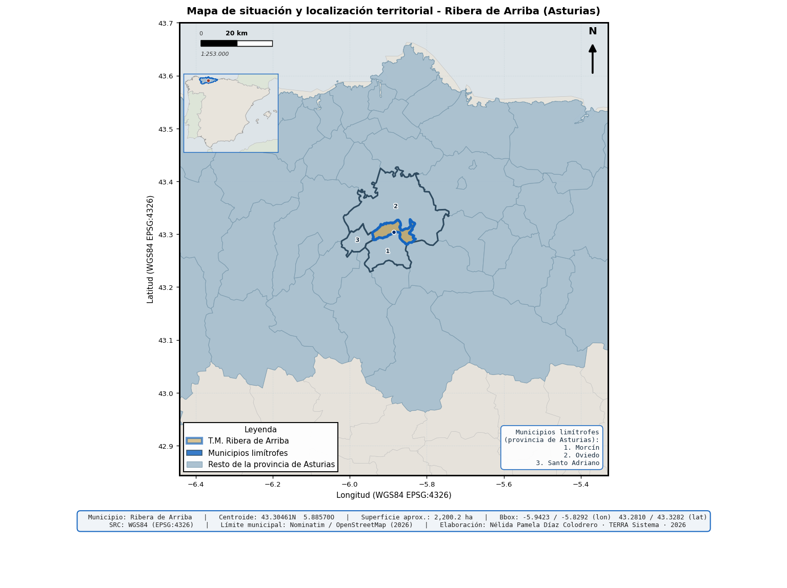
Situación de Ribera de Arriba dentro de Asturias, con sus tres municipios limítrofes.
Dentro de la comarca agraria de Oviedo, que agrupa un territorio mucho mayor en torno a la capital regional, Ribera de Arriba ocupa el extremo suroeste: una posición de borde, pegada a la comarca pero con dinámicas propias de concejo rural pequeño.
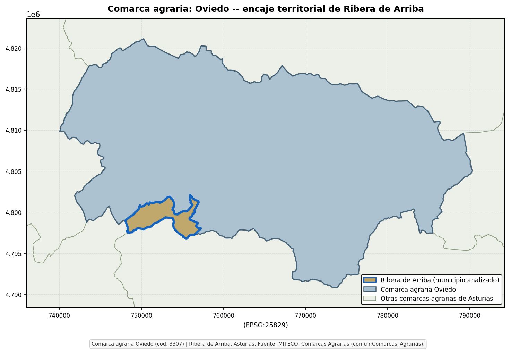
Encaje de Ribera de Arriba en la comarca agraria de Oviedo (cód. 3307).
Para leer el territorio en conjunto reuní en un mismo visor los límites municipales, las zonas de inundación oficiales (T10, T100, T500), el suelo urbano y los instrumentos de planeamiento vigentes, y toda la red de transporte. Es la capa base sobre la que se apoyan el resto de análisis de este portafolio.
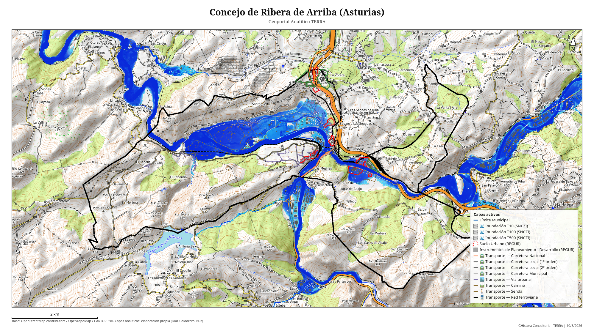
Límite municipal, inundabilidad SNCZI, suelo urbano y red de transporte sobre cartografía topográfica.
Este visor interactivo, generado automáticamente por TERRA SISTEMA, permite explorar el territorio capa por capa directamente desde el navegador, sin necesidad de instalar ningún software SIG. Con el control de capas de la esquina superior derecha puedes activar o desactivar de forma independiente el límite municipal, las zonas de inundación oficiales del SNCZI en sus tres periodos de retorno (T10, T100 y T500), el suelo urbano y urbanizable, los instrumentos de planeamiento vigentes, los elementos catalogados y bienes de interés cultural, y la red de transporte completa. Algunas capas, suelo urbano y urbanizable, planeamiento, elementos catalogados, bienes de interés cultural y usos del suelo, muestran además información detallada al pasar el ratón sobre cada elemento. Haz zoom y desplázate libremente por el mapa para explorar el territorio con el mismo nivel de detalle que se entrega en cada informe técnico.
La barra de herramientas de la izquierda añade funciones propias de un visor cartográfico profesional: zoom con los botones + y −, selección de un área concreta para consultarla en detalle, búsqueda de lugares y coordenadas, pantalla completa para una exploración más cómoda, y colocación de marcadores propios sobre el mapa. El icono de la cámara exporta directamente la vista actual como mapa listo para imprimir, en formato PNG o PDF, con escala gráfica, leyenda de capas activas y flecha de norte incluidas, sin necesidad de montarlo aparte en ningún programa de diseño. Todo el visor, capas y herramientas incluidas, se ciñe siempre al territorio objeto de estudio: en este caso, el concejo de Ribera de Arriba.
El concejo se organiza en torno a dos brazos de valle que se juntan en el centro, donde el terreno baja hasta poco más de 100 metros sobre el nivel del mar. A ambos lados, las laderas suben hasta cumbres que superan los 450-500 metros: un relieve de vega estrecha entre montañas, típico de la Asturias central.
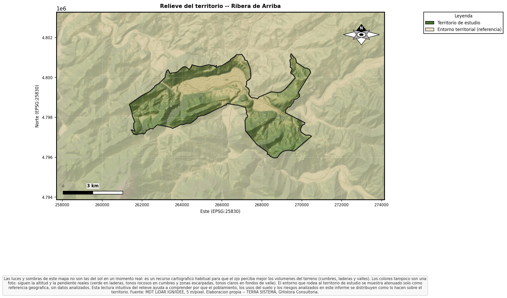
Relieve por altitud y pendiente, con el entorno territorial atenuado como referencia.
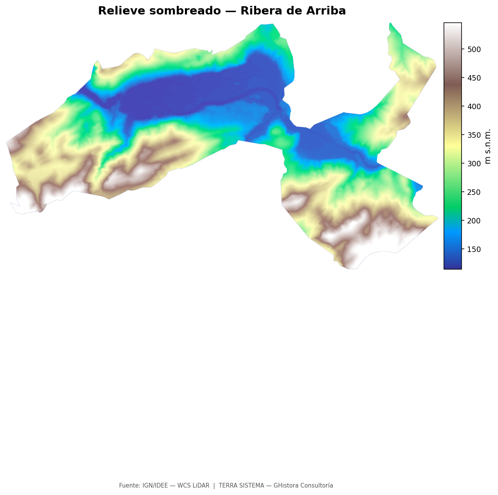
Relieve sombreado: el fondo de valle, en azul, apenas supera los 130 m; las cumbres del sur rondan los 500 m.
Las curvas de nivel muestran lo mismo con más detalle: cuanto más juntas están las líneas, más pronunciada es la ladera. Esa lectura ayuda a entender dónde es más fácil asentarse o cultivar, y dónde el terreno es más propenso a la erosión.
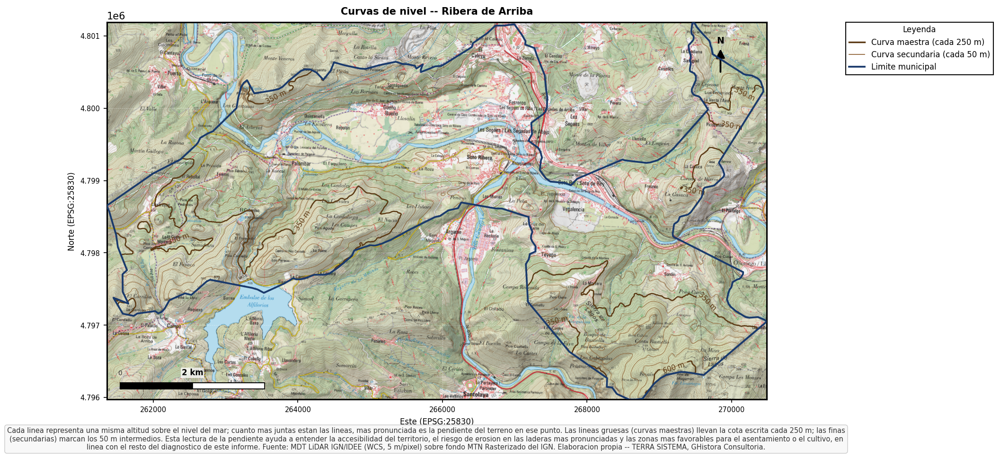
Curvas maestras cada 250 m y secundarias cada 50 m sobre el mapa topográfico del IGN.
Dos perfiles topográficos atraviesan el concejo en sus direcciones principales. El primero, de noroeste a sureste, sube desde la vega hasta un máximo de 435 m antes de volver a bajar. El segundo, de oeste a este, arranca ya alto —466 m— desciende a un collado de apenas 176 m en el centro, y vuelve a subir a 450 m hacia el este: el corte muestra bien esa alternancia de sierra, valle y sierra que define el paisaje del concejo.
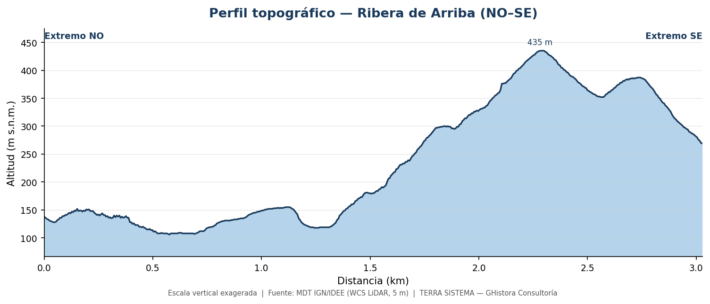
Perfil NO-SE, con un máximo de 435 m.
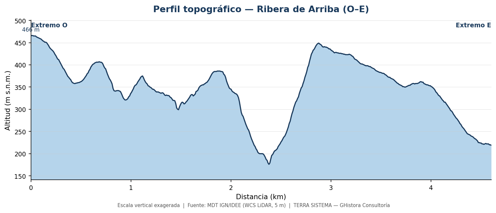
Perfil O-E, de 466 m en el extremo occidental a un collado de 176 m y una segunda cima de 450 m.
Además de estos mapas estáticos, TERRA SISTEMA genera un modelo tridimensional navegable del relieve del concejo, con textura topográfica real drapeada sobre el terreno. Por su peso (más de 100 MB, al incluir la textura completa a máxima resolución), no se puede incrustar directamente en esta página, pero puede descargarse y abrirse en cualquier navegador para explorarlo con zoom, rotación e inclinación libres.
📥 Descargar el modelo 3D del relieve de Ribera de Arriba
⚠️ Recomendaciones para abrir el modelo 3D: funciona mejor en Firefox de escritorio. En Chrome puede no cargar la escena por restricciones de seguridad del navegador con archivos locales grandes. En dispositivos móviles, el tamaño del archivo puede hacer que la carga sea lenta o no llegue a completarse.
Bajo ese relieve hay una geología plegada y fallada: calizas grises, pizarras y areniscas, cuarcitas y algún tramo de calizas y margas apizarradas, con fallas y pliegues que atraviesan el concejo de oeste a este. Sobre el mapa geológico oficial del IGME anoté también las medidas de buzamiento disponibles, el ángulo con el que se inclinan los estratos, útil para valorar la estabilidad de las laderas.
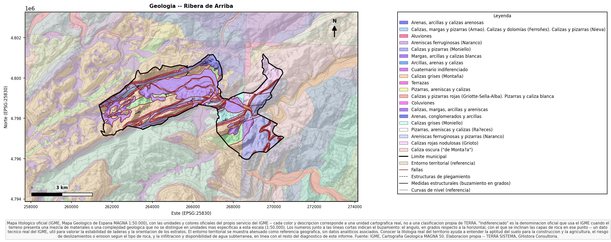
Litologías, fallas y estructuras de plegamiento (IGME, MAGNA 1:50.000).
La misma información, leída por edad geológica en vez de por litología, muestra franjas que van del Lochkoviense y el Wenlock —hace más de 400 millones de años— hasta el Holoceno reciente en el propio fondo de valle.
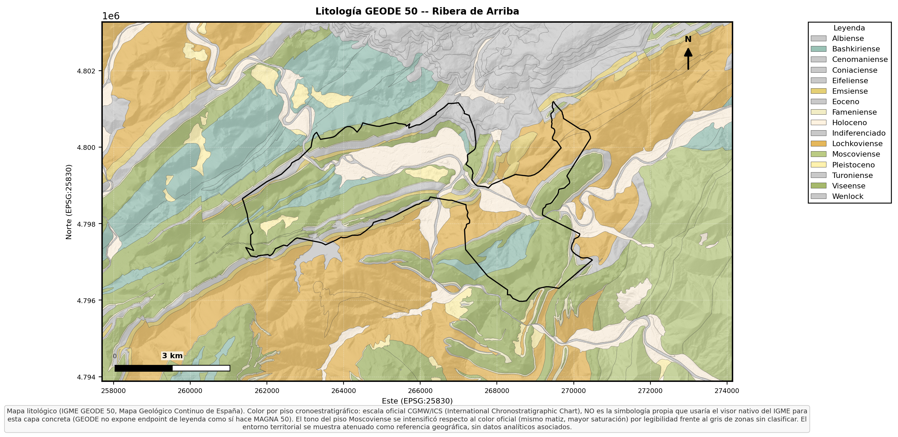
Litología por piso cronoestratigráfico (IGME, GEODE 50).
El mapa de movimientos del terreno del IGME cubre prácticamente todo el concejo con dos fenómenos de escala regional —movimientos verticales sobre materiales carbonatados y movimientos horizontales—, aunque su escala, 1:1.000.000, es demasiado general para localizar el riesgo dentro de una parcela concreta: dice que el fenómeno existe en la zona, no dónde exactamente.
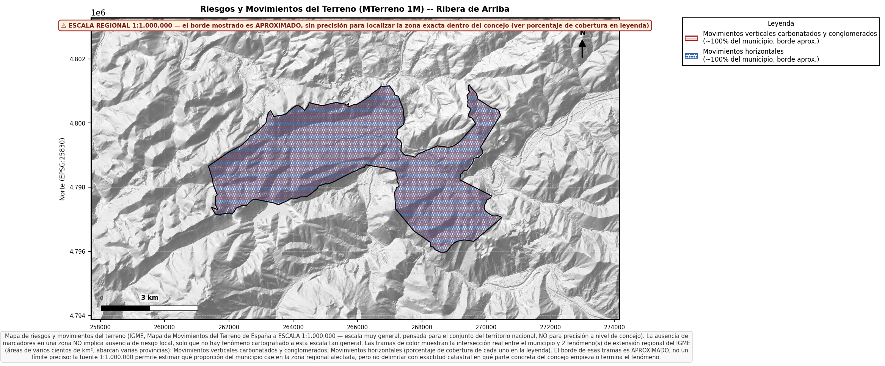
Movimientos del terreno cartografiados a escala regional (IGME, Mapa de Movimientos del Terreno).
Casi dos tercios del concejo, 1.425 de las 2.200 hectáreas, están clasificados como sector primario: uso agrícola, forestal, minero o pesquero. Pero una porción muy notable, 619 hectáreas, figura sin uso o en transición — el primer dato a mirar en cualquier estrategia de recuperación de suelo agrario o forestal. El resto se reparte entre transporte e infraestructuras (108 ha), industria (53 ha), uso residencial (16 ha) y servicios (15 ha).
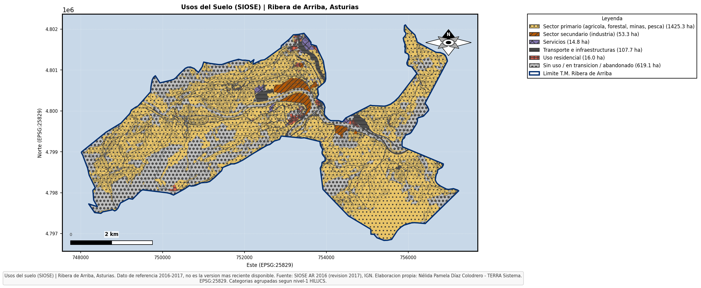
Usos del suelo por categoría (SIOSE AR, revisión 2017).
Crucé las clases agrológicas oficiales —la capacidad real del suelo para el uso agrario— con el uso efectivo detectado, y aparecen dos listas de trabajo complementarias: 686 parches de agricultura activa sobre suelo de máxima limitación, candidatos a reconversión por riesgo de erosión, y 333 parches de buena clase agrológica que hoy no se usan, una oportunidad de recuperación agraria que ni el dato agrológico ni el catastral ofrecen por separado.
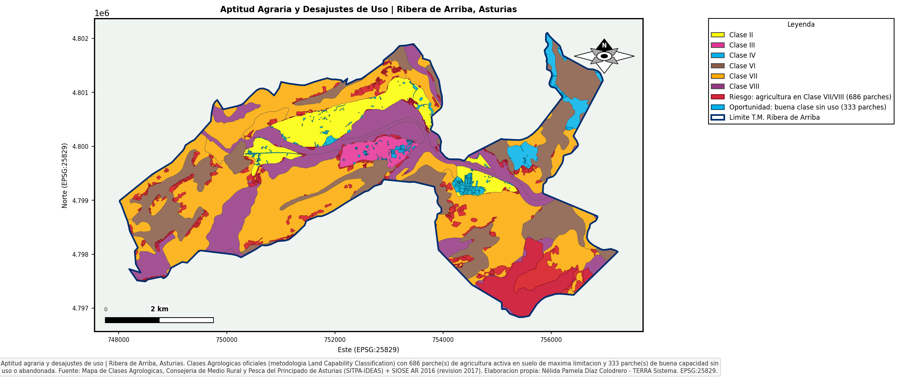
Clases agrológicas oficiales frente a uso real: 686 parches de riesgo, 333 de oportunidad.
Sobre el catastro conté 6.418 parcelas, con un tamaño medio de 3.419 m² y una mediana de apenas 1.166 m²: casi la mitad, el 46%, no llega a las 0,1 hectáreas. Es una estructura de propiedad muy fragmentada, herencia de siglos de reparto agrario, que condiciona cualquier intento de gestión conjunta del territorio.
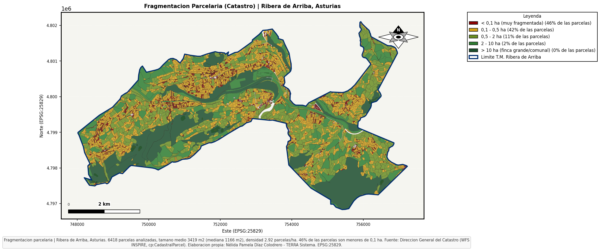
Fragmentación parcelaria: 6.418 parcelas, densidad de 2,92 por hectárea.
Toda intervención sobre el territorio depende, tarde o temprano, de cómo se llega a él. La red viaria del concejo combina un tramo de autovía y un corredor ferroviario que cruzan de norte a sur por el este, con carreteras locales y municipales que reparten el tráfico interno, y una malla amplia de caminos y sendas —271 y 227 tramos respectivamente— que sostiene la movilidad rural. Es la base sobre la que se calculan después las isócronas reales de accesibilidad.
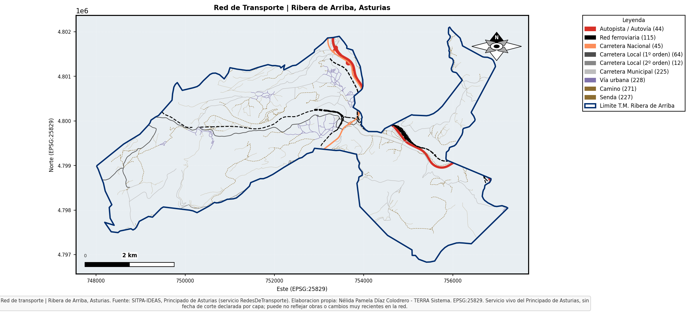
Red de transporte por categoría (SITPA-IDEAS, Principado de Asturias).
Saber dónde vive la gente es el primer paso para saber a quién afecta cualquier decisión sobre el territorio. La población se concentra en la vega: Soto Ribera, la capital, reúne el núcleo más poblado, y a su alrededor se distribuyen otras veinticinco entidades, casi todas pequeñas y dispersas hacia las laderas — la dispersión que después se traduce en tiempos de acceso muy distintos según dónde se resida.
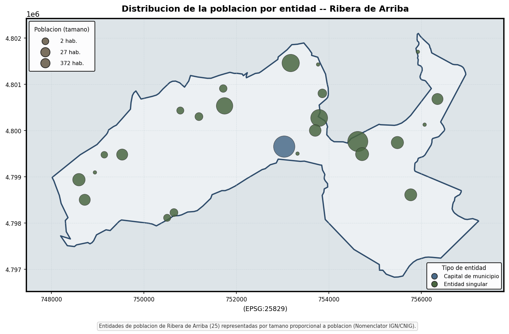
Población por entidad, tamaño proporcional al número de habitantes (Nomenclátor IGN/CNIG).
Esa dispersión se puede medir con precisión, no solo intuir. Calculé isócronas reales de accesibilidad desde Soto Ribera sobre la red viaria oficial, no en línea recta: los núcleos del entorno inmediato quedan a menos de 8 minutos, mientras que los más alejados, hacia los extremos del concejo, superan los 16-20 minutos por carretera — una diferencia real a la hora de planificar servicios o emergencias.
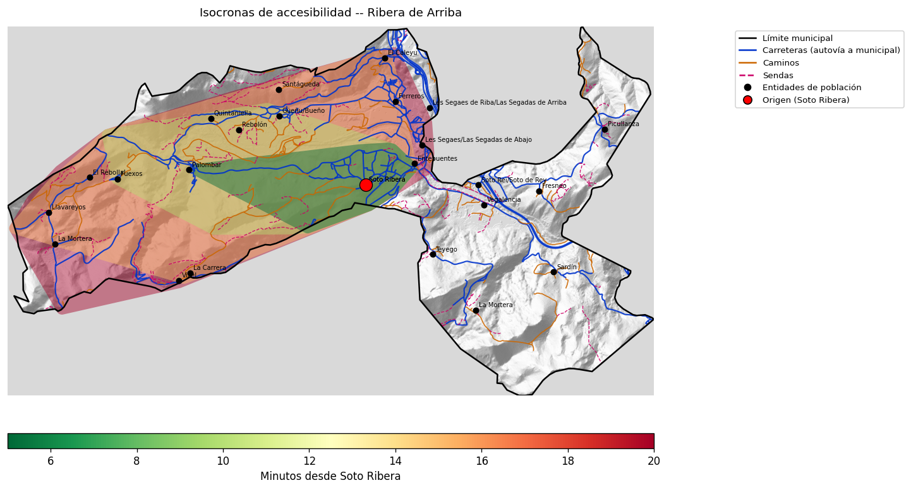
Isócronas de accesibilidad desde Soto Ribera sobre la red viaria real.
Este segundo visor, una versión reducida del anterior centrada en el Catastro, permite ir un paso más allá: superponer las parcelas, construcciones y subparcelas oficiales sobre ortofoto PNOA, satélite o callejero y comprobar, capa por capa, dónde el dato registrado no coincide con lo que realmente hay sobre el terreno. Es una lectura visual, no automática, pero justamente por eso resulta útil como primer filtro: basta con activar Catastro-Parcelas o Catastro-Construcciones sobre una ortofoto o una imagen de satélite para que las discrepancias salten a la vista de inmediato.
Para dejar constancia de una incongruencia concreta, TERRA SISTEMA incorpora una herramienta de marcado manual: un rectángulo de trazo grueso, en negro y amarillo, pensado para resaltar de un vistazo cualquier elemento que llame la atención, ya sea una construcción sin reflejo catastral, una parcela con un límite dudoso o cualquier otra anomalía visual. El propio icono de la cámara del visor exporta entonces la vista completa como un mapa listo para imprimir, con leyenda, escala y flecha de norte incluidas, dejando el hallazgo documentado tal cual se observó. Los tres mapas siguientes son justamente eso: capturas reales, obtenidas con esa misma cámara sobre el visor de arriba, cambiando únicamente la capa base para comprobar cómo se leen las mismas discrepancias sobre distintos fondos.
⚠️ La herramienta de marcado manual (el icono de rectángulo de la barra de herramientas) requiere el visor en ejecución y no está disponible al abrir un mapa ya exportado como archivo HTML independiente, por las mismas restricciones de seguridad de los navegadores que afectan a otros elementos interactivos de esta página.
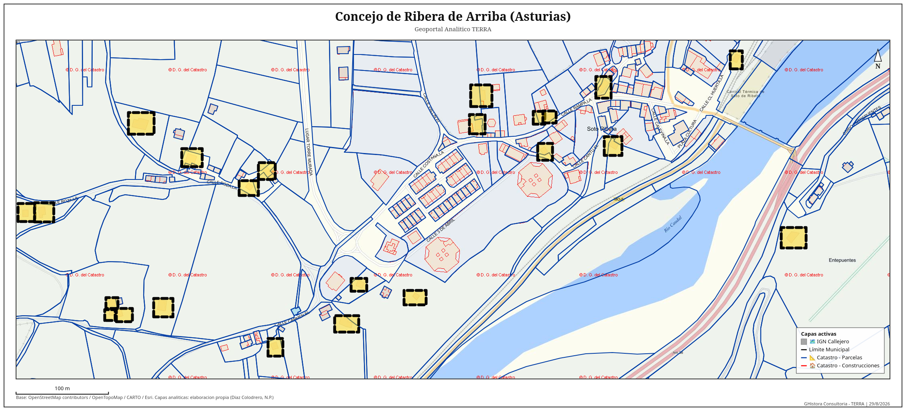
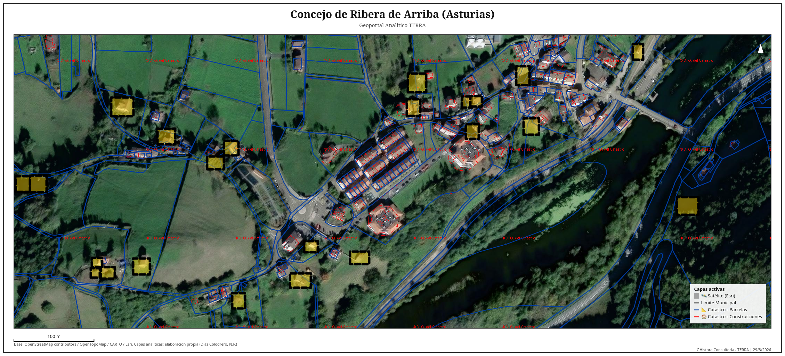
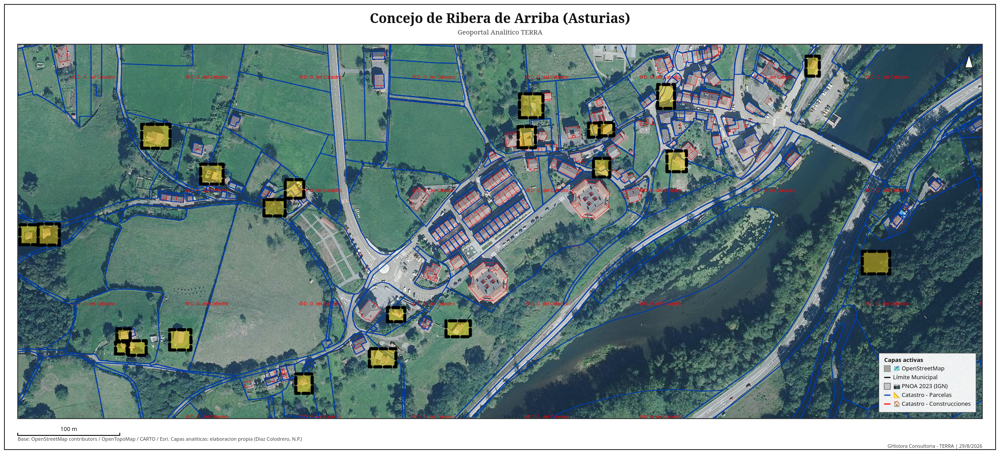
La misma comprobación sobre tres capas base distintas — callejero IGN, satélite Esri y ortofoto PNOA 2023 — con las incongruencias marcadas a mano.
Por último, crucé las zonas protegidas —Red Natura 2000, espacios naturales y montes de utilidad pública— con los usos del suelo incompatibles: aparecen 25 parches de transporte, industria o residencial dentro de esas zonas, concentrados sobre todo en un corredor concreto del centro del concejo.
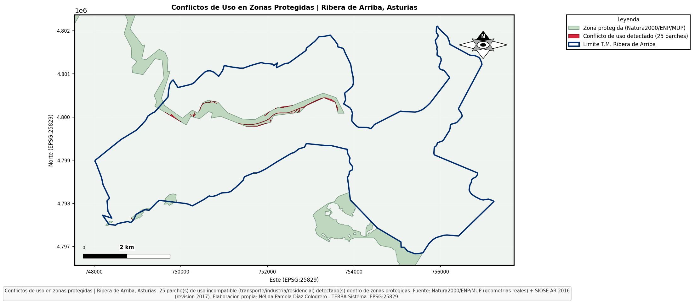
25 parches de uso incompatible detectados dentro de zonas protegidas.
Para medir el cambio sobre el terreno comparé dos escenas Sentinel-2 de verano, de agosto de 2018 y del verano de 2026, con cuatro índices espectrales: vegetación (NDVI), humedad (NDWI), suelo desnudo o construido (NDBI) y estrés o pérdida de vegetación leñosa (NBR). Un cambio se cuenta solo si supera un umbral de ±0,15; lo que queda dentro de ese margen se considera estable. Lo que sigue son señales detectadas por satélite, no hechos verificados sobre el terreno: indican dónde mirar, no qué ha pasado.
Entre las dos escenas, 420,9 hectáreas (casi una quinta parte del concejo) muestran un descenso de NDVI y solo 37,6 un aumento. Ocho de cada diez hectáreas no cambian, pero el descenso no se reparte al azar: se concentra en la vega y en las laderas próximas a los núcleos habitados.
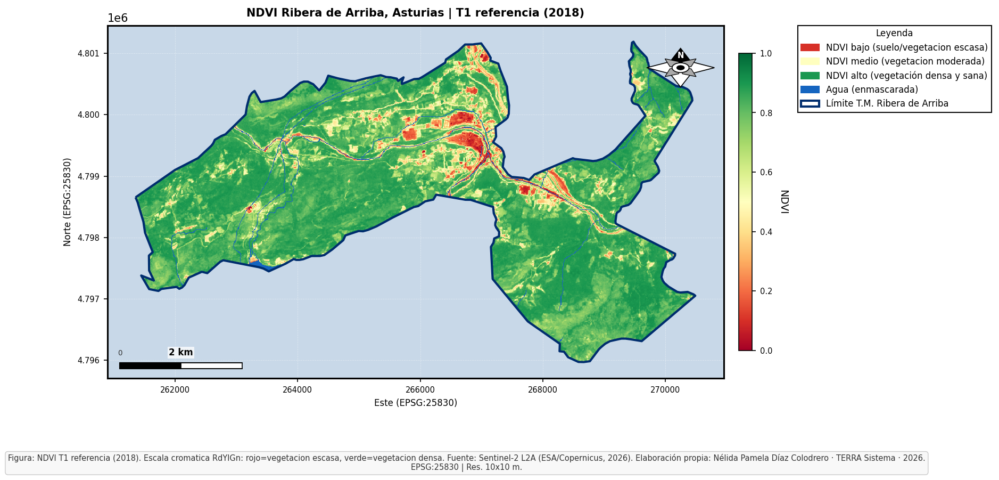
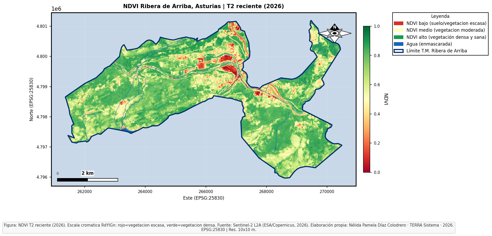
NDVI en 2018 y en 2026, lado a lado.
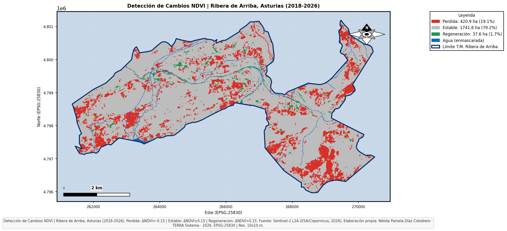
Descenso (rojo), estabilidad y aumento (verde) de NDVI, 2018-2026.
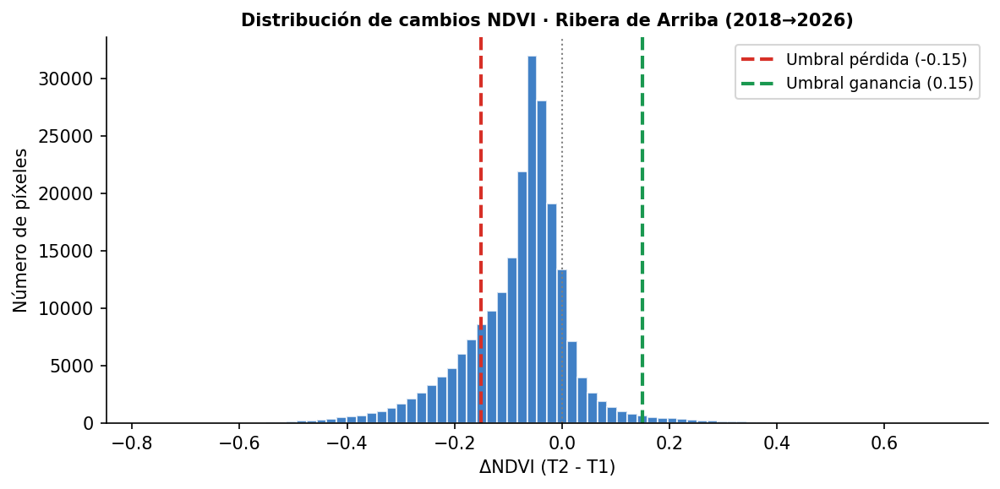
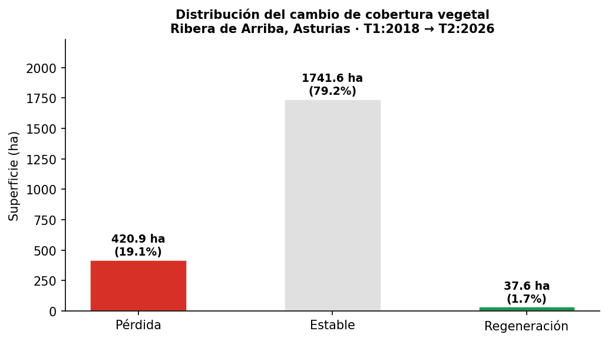
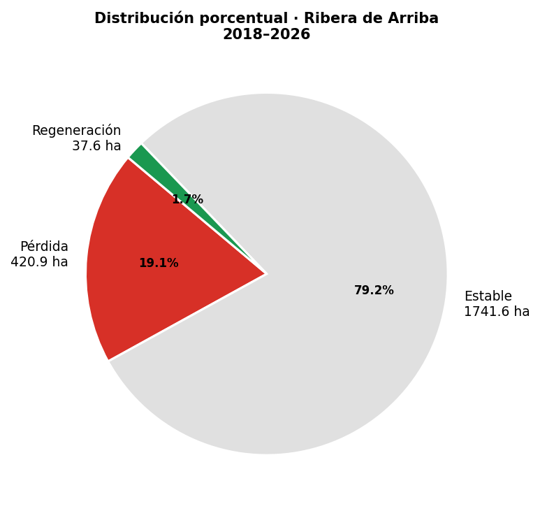
Misma cifra, tres lecturas: distribución de píxeles, superficie por categoría y reparto porcentual.
Dos escenas sueltas heredan el clima de esa semana. Para saber si el descenso es un cambio de cobertura o un efecto del año, medí el NDVI medio en el verano de cada año entre 2018 y 2026 y repetí la medición en primavera.
NDVI medio por año, una escena por estación. El verano se mide sobre el polígono del concejo; la primavera, sobre una ventana rectangular que lo envuelve. Las escenas de primavera caen en fechas distintas y varían con la fenología (de ahí 2021 y 2023).
El NDVI de verano es estable entre 2018 y 2024 (0,79-0,82) y baja en 2025 (0,74) y 2026 (0,72). En primavera (medida sobre la ventana rectangular), 2025 y 2026 recuperan valores normales (0,80-0,81). Un descenso que aparece solo en verano y no persiste en primavera es más coherente con un verano seco que con una pérdida de cobertura.
Para comprobarlo medí la lluvia diaria de dos estaciones de AEMET: Oviedo (indicativo 1249X, a unos 6 km del concejo) y Mieres-Baíña (1234P, también a unos 6 km, en otro valle). En las dos, 2025 y 2026 son los dos veranos más secos de los nueve. En Oviedo acumularon 153 y 128 mm frente a 222-360 mm en cada uno de los siete años anteriores, y en Mieres-Baíña 139 y 162 mm frente a 214-319 mm. En los 60 días previos a cada escena la diferencia es aún mayor: 48 y 37 mm en Oviedo y 39 y 84 mm en Mieres-Baíña, cuando ningún otro año bajó de 112 y 94 mm. 2026 fue además el verano más caluroso de la serie en ambas estaciones. Coinciden con los dos NDVI más bajos.
| Año | NDVI verano |
Lluvia jun-sep (mm) | Lluvia 60 días antes de la escena (mm) | Días de 30 °C o más | |||
|---|---|---|---|---|---|---|---|
| Oviedo | Mieres | Oviedo | Mieres | Oviedo | Mieres | ||
| 2018 | 0,804 | 360 | 296 | 251 | 175 | 3 | 6 |
| 2019 | 0,815 | 258 | 214 | 132 | 94 | 3 | 7 |
| 2020 | 0,788 | 250 | 222 | 116 | 101 | 5 | 7 |
| 2021 | 0,818 | 258 | 249 | 171 | 137 | 1 | 5 |
| 2022 | 0,795 | 242 | 249 | 115 | 129 | 11 | 18 |
| 2023 | 0,793 | 222 | 249 | 112 | 139 | 8 | 18 |
| 2024 | 0,823 | 260 | 319* | 141 | 148 | 2 | 7 |
| 2025 | 0,739 | 153 | 139 | 48 | 39 | 6 | 19 |
| 2026 | 0,715 | 128 | 162 | 37 | 84 | 13 | 30 |
Estaciones AEMET de Oviedo (1249X, 334 m) y Mieres-Baíña (1234P, 170 m), datos diarios. *En Mieres-Baíña, el verano de 2024 solo tiene 98 de los 122 días con dato, por lo que su cifra puede estar incompleta. Resaltados, los dos veranos con menor NDVI.
Es coherente con un descenso causado por la sequía, y lo indican dos estaciones de valles distintos, pero no es una demostración: son nueve años, una escena por verano y estaciones a unos kilómetros del concejo, no sobre la vega. Falta además contrastarlo con la ortofoto.
Estos datos diarios no son los que muestra el visor en su apartado de clima. Allí se citan los valores normales de AEMET: el promedio de 30 años (1991-2020) de cada variable, que describe el clima típico del lugar y no el de un año concreto. Aquí necesitaba la medición de cada día, y por eso uso otras estaciones: la del visor (Oviedo, 1249I) no devuelve datos diarios a partir de 2023, aunque sus valores normales, al ser un promedio histórico, siguen siendo válidos como referencia.
Al repetir el análisis en octubre, TERRA eligió otras dos escenas (2 de septiembre de 2018 y 14 de septiembre de 2026) y el descenso de NDVI cayó del 19,1 % (420,9 ha) al 4,6 % (101,3 ha), y el de NBR del 24,7 % al 15,3 % (335,1 ha). Lo comprobé por mi cuenta, fuera de TERRA, con las dos parejas de fechas: con las de verano el NDVI medio baja de 0,80 a 0,72; con las de septiembre se queda igual (0,786 y 0,788), es decir, a mediados de septiembre de 2026 la vegetación está tan verde como en 2018. Las hectáreas de esta página corresponden al primer par, el de verano.
Mismos índices, dos pares de fechas
| Índice | Descenso | Aumento | Medio T1 → T2 |
|---|---|---|---|
| Par A · 5 ago 2018 → 29 jul 2026 (verano) | |||
| NDVI | 20,6 % | 1,3 % | 0,804 → 0,715 |
| NBR | 26,6 % | 1,4 % | 0,536 → 0,438 |
| NDBI | 1,2 % | 21,7 % | −0,246 → −0,167 |
| Par B · 2 sep 2018 → 14 sep 2026 (septiembre) | |||
| NDVI | 4,6 % | 4,0 % | 0,786 → 0,788 |
| NBR | 17,7 % | 3,2 % | 0,528 → 0,465 |
| NDBI | 2,5 % | 19,7 % | −0,238 → −0,167 |
Una escena de verano por año, 2018-2026
| Año | Escena | Procesado | NDVI | NBR | NDBI |
|---|---|---|---|---|---|
| 2018 | 05/08 | 05.00 | 0,804 | 0,536 | −0,246 |
| 2019 | 12/09 | 05.00 | 0,815 | 0,541 | −0,251 |
| 2020 | 13/09 | 05.00 | 0,788 | 0,489 | −0,187 |
| 2021 | 18/07 | 05.00 | 0,818 | 0,567 | −0,291 |
| 2022 | 19/08 | 04.00 | 0,795 | 0,494 | −0,212 |
| 2023 | 07/08 | 05.09 | 0,793 | 0,510 | −0,237 |
| 2024 | 16/08 | 05.11 | 0,823 | 0,534 | −0,239 |
| 2025 | 10/08 | 05.11 | 0,739 | 0,482 | −0,195 |
| 2026 | 29/07 | 05.12 | 0,715 | 0,438 | −0,167 |
Medias sobre el polígono municipal en un único mosaico Sentinel-2 (cubre en torno al 70 % del concejo), por lo que los porcentajes difieren algo de los del análisis completo de TERRA. Umbral de cambio ±0,15. Derecha: escena de menor nubosidad entre julio y septiembre; «Procesado» es la versión de procesado de Sentinel-2; resaltados, 2025 y 2026.
El NBR y el NDBI sí mantienen un desplazamiento en septiembre (el NDBI sube unos 0,07 en los dos pares y el NBR baja), pero la serie de nueve años lo sitúa en contexto: 2026 es el extremo en los tres índices, 2025 es el segundo en NDVI y NBR, y el NDBI de 2020 (−0,187) ya fue tan alto como el de 2025 (−0,195). La versión de procesado no lo explica (2024 y 2025 comparten procesado y difieren), y las bandas crudas apuntan a superficies más secas, con el rojo y el infrarrojo de onda corta más altos en 2025 y 2026. 2018, además, fue un año de referencia favorable.
Con la humedad la fotografía cambia por completo. El NDWI apenas se mueve: 92,6% del territorio estable, y donde hay variación es más aumento que descenso. Las pocas líneas rojas que aparecen en el mapa no están dispersas — dibujan, casi calcado, el trazado del río principal.
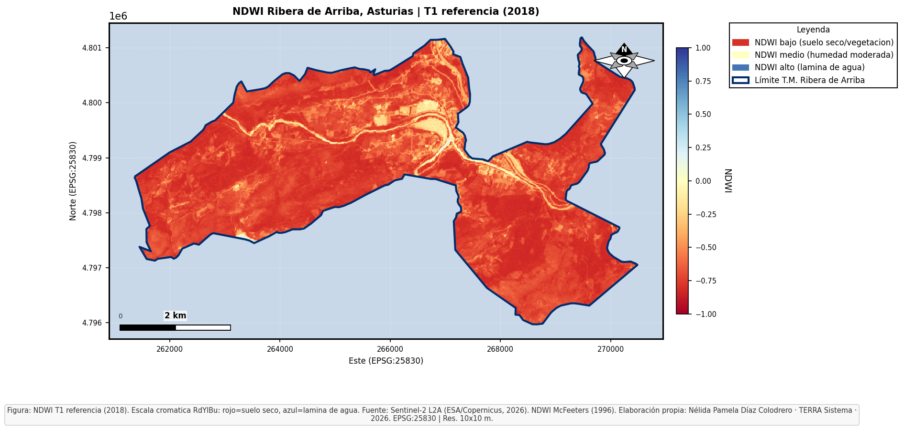
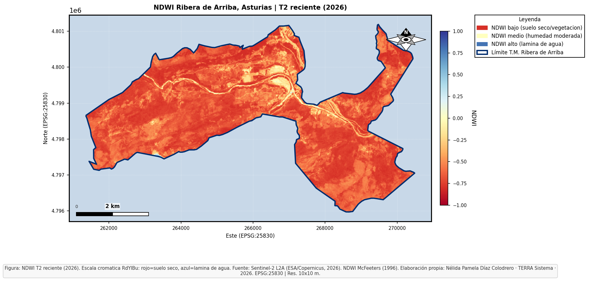
NDWI en 2018 y en 2026.
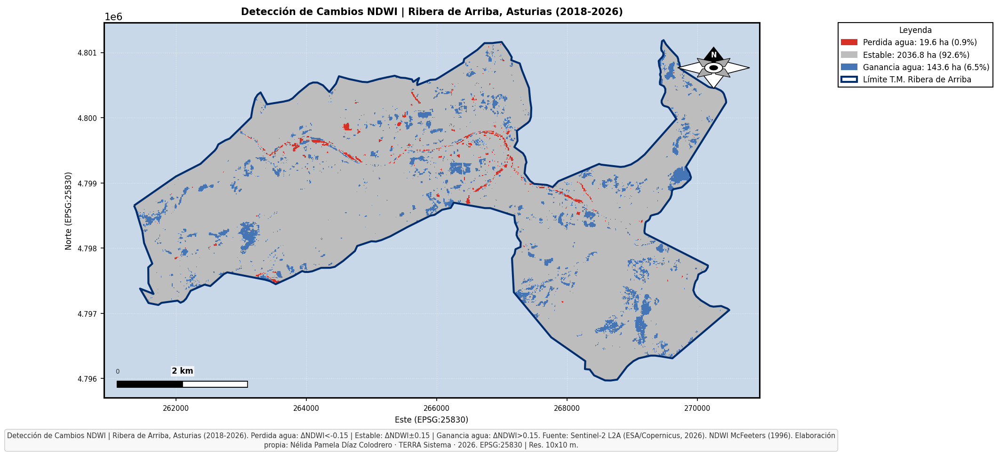
Cambios de humedad 2018-2026: 92,6% estable, 6,5% de aumento.
El NDBI marca 455 hectáreas (20,8 %) con valores más altos en 2026, y todo el territorio se desplaza en el mismo sentido (el NDBI medio pasa de −0,25 a −0,17 en la parte del concejo que cubre la escena). Para comprobar si corresponde a obra nueva lo crucé con los 1.129 edificios del Catastro: la señal no es mayor sobre los edificios (15 %) que fuera de ellos (22 %), y solo el 5 % cae a menos de 15 metros de uno. Los edificios construidos desde 2019 ocupan unas décimas de hectárea, tres órdenes de magnitud menos que la señal. No se explica por obra nueva: es un cambio general, coherente con vegetación y suelo más secos en 2026, como indica la lluvia de ese verano; se repite con otro par de fechas (septiembre) y la serie anual lo sitúa entre los extremos de los nueve años (véase más arriba).
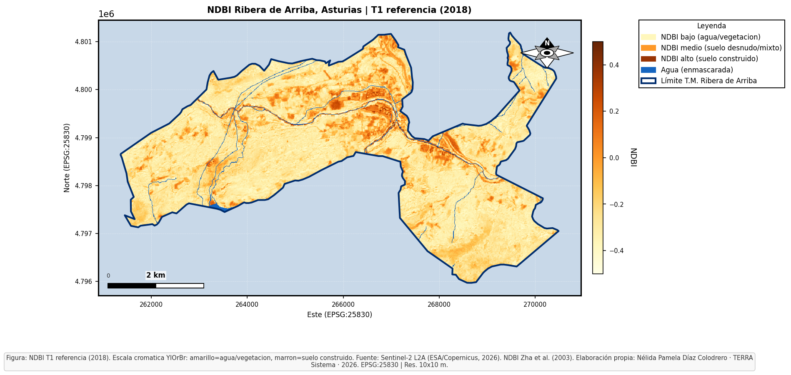
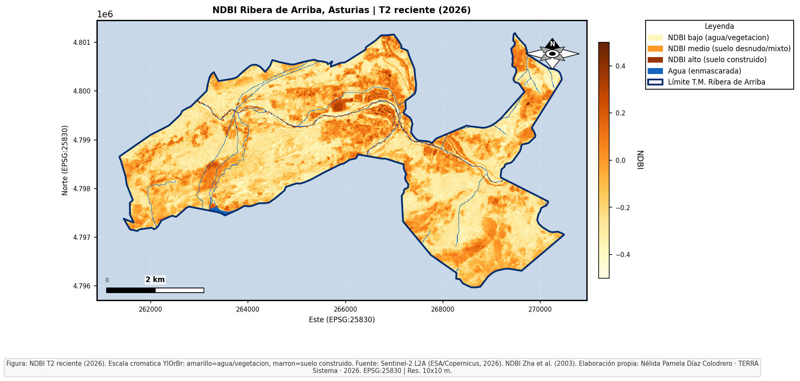
NDBI en 2018 y en 2026.
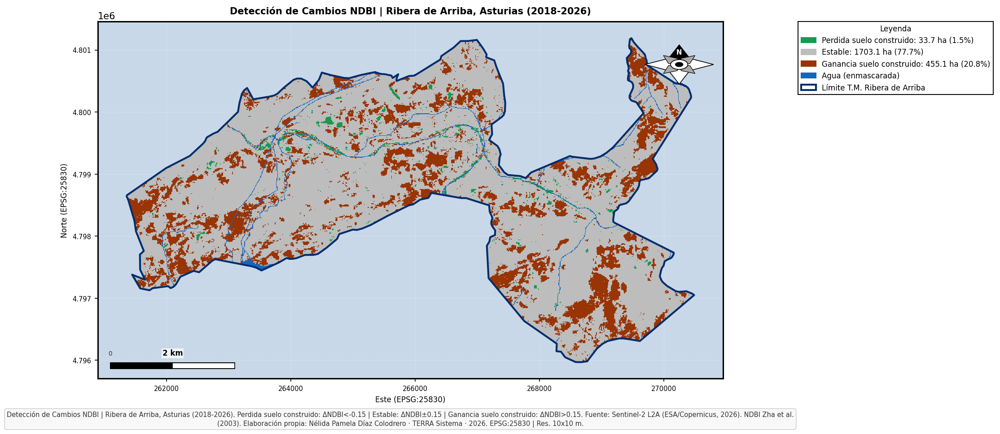
Aumento de NDBI, 2018-2026: 20,8% del territorio (señal sin verificar).
El NBR muestra un descenso en 542 hectáreas (24,7 %), el porcentaje más alto de los cuatro, y solo un 1,8 % de aumento. Es un índice sensible al estrés hídrico además de a los incendios, y este análisis no aporta evidencia de quemas: la señal se lee como estrés o pérdida de vegetación leñosa, a contrastar con focos de incendio registrados (NASA FIRMS). Con las escenas de septiembre de una ejecución posterior, el descenso baja al 15,3 % (335 ha).
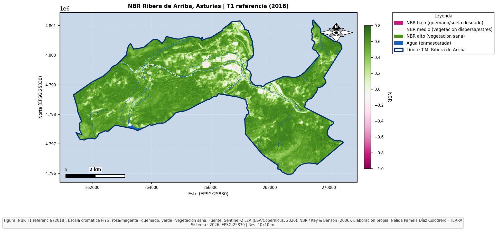
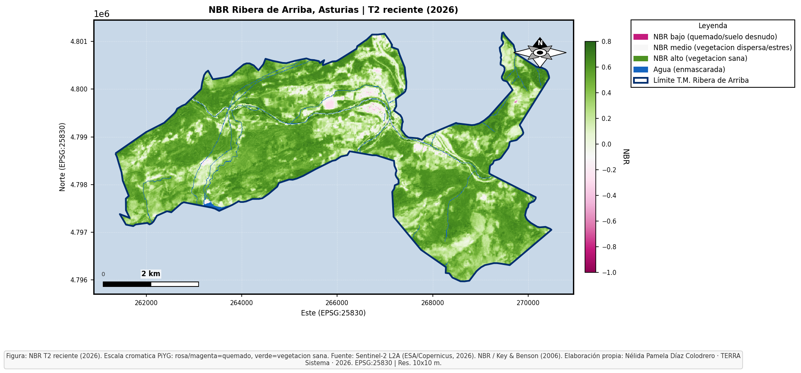
NBR en 2018 y en 2026.
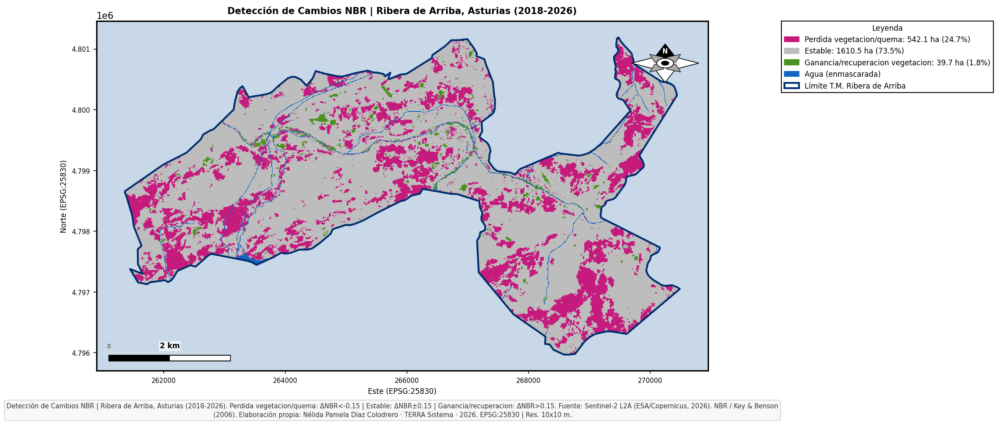
Descenso de NBR, 2018-2026: 24,7% del territorio.
Superpuse los cuatro índices para ver dónde coinciden varias señales de cambio a la vez. En el 78,5% del territorio no coincide ninguna; en el 15,8% coinciden tres de las seis combinaciones evaluadas. Son las zonas donde coinciden varias señales y que merecen revisión prioritaria sobre el terreno; al compartir bandas espectrales, esa coincidencia no equivale a una confirmación independiente.
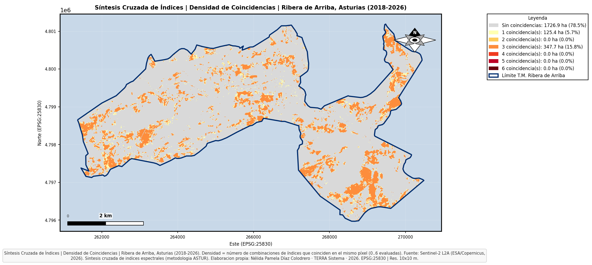
Densidad de coincidencias entre los seis cruces posibles de los cuatro índices.
Ningún dato de este diagnóstico predice el futuro. Lo que sí permite es proyectarlo bajo hipótesis distintas, tomando como base la misma tendencia de pérdida y regeneración de NDVI ya observada entre 2018 y 2026 — no un modelo numérico, sino tres relatos posibles del mismo territorio, según qué se haga o se deje de hacer con él.
El primero parte de lo que ya existe: la infraestructura verde protegida no como zona de reserva pasiva, sino como base real desde la que planificar una recuperación activa del suelo degradado.
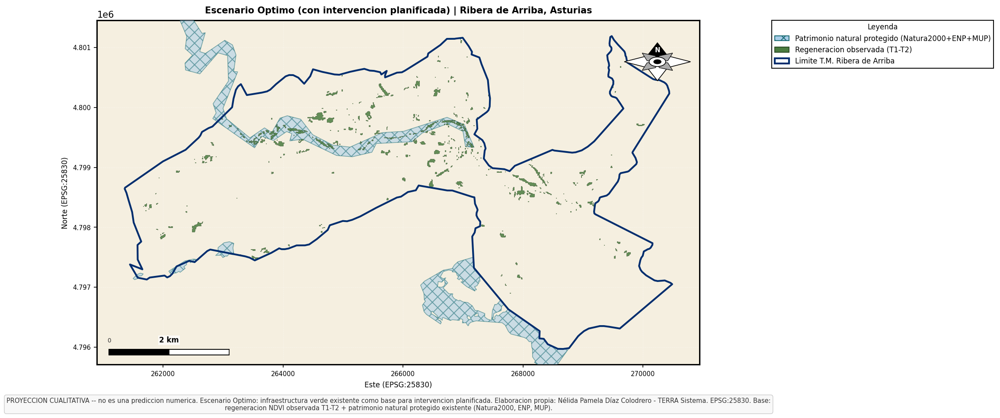
Escenario óptimo: regeneración observada sobre la base del patrimonio natural protegido.
El segundo escenario no cambia nada. Si la dinámica actual sigue su curso sin intervención alguna, cada foco de pérdida ya detectado arrastra consigo un halo de expansión potencial de 75 metros a su alrededor: la inercia, proyectada hacia delante.
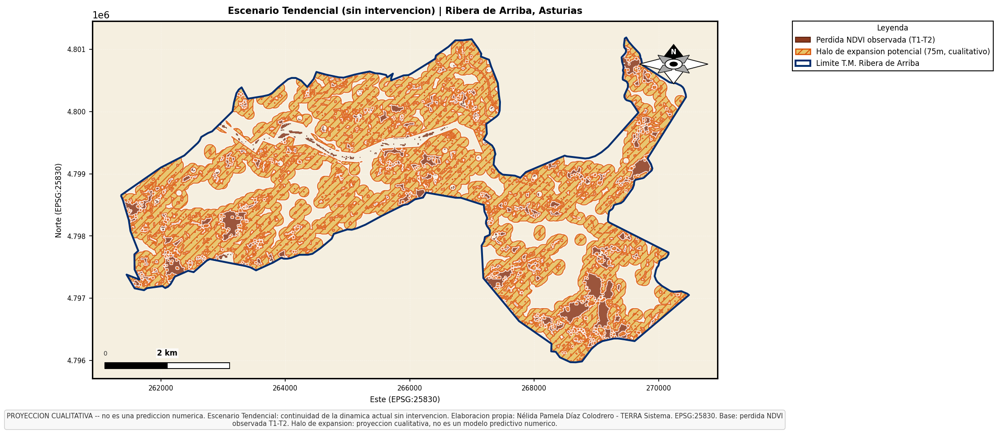
Escenario tendencial: continuidad de la pérdida de NDVI observada, sin intervención.
El tercero añade una variable que los dos anteriores no miran: la gente. Cuando esa misma carga de combustible vegetal queda a menos de 500 metros de un núcleo habitado, deja de ser solo un dato ecológico y pasa a ser un umbral de riesgo real — el punto donde una perturbación extrema tendría consecuencias directas sobre las personas, no solo sobre el paisaje.
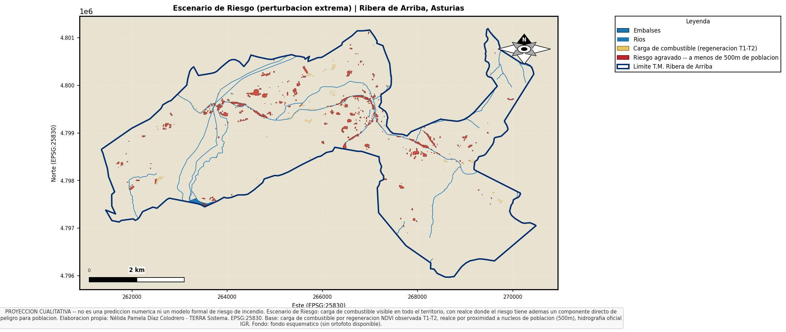
Escenario de riesgo: carga de combustible agravada cerca de la población.
Fuentes → Procesamiento → Cruce → Verificación → Interpretación
Un dato de una sola fuente, o una sola pareja de fechas, es una hipótesis de trabajo. Se contrasta con otra fuente independiente antes de entrar en el diagnóstico, y los límites de escala o resolución se dicen en voz alta (por ejemplo, el mapa de movimientos del terreno es 1:1.000.000 y no sirve para localizar riesgo en una parcela concreta).
Un ejemplo de este mismo portfolio: la primera lectura de las dos escenas de teledetección sugería una pérdida de vegetación importante. Antes de darla por buena medí la serie de nueve veranos y la de nueve primaveras, y la interpretación cambió: de pérdida de cobertura a descenso estival. Después lo contrasté con la lluvia diaria de dos estaciones, y los dos veranos con menos NDVI resultaron ser los dos más secos de la serie; y el cruce con las construcciones del Catastro descartó que el aumento del NDBI fuera obra nueva. Y al repetir el análisis con otro par de fechas vi que el descenso de NDVI cae del 19,1 % al 4,6 %: por eso las cifras de esta página se leen siempre con sus fechas.
El diagnóstico de Ribera de Arriba no cierra en un solo sentido. El territorio muestra señales de deterioro: una cuarta parte de la superficie presenta descenso de NBR y una quinta parte descenso de NDVI entre dos veranos (2018 y 2026), una señal que la serie de nueve años sitúa en 2025 y 2026, los dos veranos más secos del periodo, y que se lee como probable estrés estival, no como pérdida confirmada: con escenas de septiembre el descenso de NDVI casi desaparece. Falta contrastarlo con la ortofoto. Pero ese mismo diagnóstico también señala dónde está el margen de maniobra — 333 parches de buena aptitud agrológica hoy sin uso, y una infraestructura verde protegida que puede servir de base real, no solo simbólica, para cualquier estrategia de recuperación. Encontrar ese margen no es casualidad: es lo que permite un sistema como TERRA, que cruza automáticamente capas que, por separado, nunca habrían revelado la misma oportunidad.
La fragmentación parcelaria (más de 6.400 parcelas, casi la mitad por debajo de 0,1 hectáreas) y los 25 focos de uso incompatible detectados dentro de zonas protegidas marcan los puntos donde la planificación tiene trabajo pendiente: no como advertencia genérica, sino como localización concreta, verificable capa a capa. La síntesis cruzada de los cuatro índices espectrales sugiere que la señal más relevante no está dispersa, sino concentrada en un corredor identificable del concejo, lo que convierte esta lectura en una herramienta de priorización y no solo de constatación.
En conjunto, el concejo conserva una base territorial con margen de recuperación real si se actúa sobre las zonas ya señaladas, antes de que las señales observadas se confirmen o se disipen.
Este conjunto de mapas y datos no es un punto final, sino la base de trabajo: a partir de él, TERRA SISTEMA construye el análisis DAFO y CAME del concejo y un informe técnico en PDF centrado en las necesidades reales del territorio y en las líneas de actuación prioritarias que se derivan del diagnóstico. Todo el proceso está supervisado por mí, graduada en Historia por la Universidad de Oviedo y Máster en Recursos Territoriales y Estrategias de Ordenación (Universidad de Oviedo / Universidad de Cantabria), lo que me permite contrastar cada resultado con criterio experto antes de llegar al informe final.
Este diagnóstico se ha elaborado con TERRA SISTEMA, una herramienta propia que puede aplicarse a cualquier municipio de España a partir de sus fuentes oficiales de datos geoespaciales. Si eres un ayuntamiento o una entidad local y te interesa un análisis similar para tu concejo, o si buscas a alguien con este perfil para tu equipo (análisis territorial, SIG, teledetección y automatización de procesos cartográficos), escríbeme.
📧 npameladiazcolodrero@gmail.com
📞 +34 603 852 497